Manual para head coaches y dirección · 14 de octubre de 2026
El calendario de torneos solo lo ven y lo tocan los head coaches y dirección. Los entrenadores no tienen esta sección. Cada head coach responde de su gran grupo; dirección arbitra y valida.
| Tarea | Head coach | Dirección |
|---|---|---|
| Ver el calendario y las fichas de torneo | Sí | Sí |
| Añadir, editar, cancelar o fusionar torneos | Sí | Sí |
| Poner quién acompaña | Sí | Sí |
| Apuntar, mover o quitar jugadores | Solo los de su grupo | Todos |
| Dar de alta a un jugador que no tiene ficha | No | Sí (Datos → Jugadores) |
| Cambiar de grupo a un jugador | Los de su color (Datos → Grupos) | Todos, y mover columnas entre bloques |
| Registrar vacaciones de entrenadores | Las de su equipo | Todas |
| Validar torneos propuestos | No | Sí |
Los head coaches, cada uno con su grupo de color:
| Head coach | Grupo | Entrenadores del grupo |
|---|---|---|
| Daniel Gimeno | Amarillo | Víctor Redondo, Javi Giménez, Blas Gallego, Emilio Sorio |
| Pablo Gil | Turquesa | Pablo Gil, Mario Muniesa, Jorge Ibáñez, Salva Barcala |
| Santi Panzarasa | Naranja | Patricio Rodríguez, Nacho Calvo |
| Iván Gallego | Todos | Ve y gestiona a todos los jugadores |
Sergio Gallego entra como dirección. Se entra con el usuario de siempre en gtennis.vercel.app (también desde el móvil). En el menú de la izquierda hay una sección Torneos con tres entradas: Calendario de torneos, Torneos por jugador y Nuevo torneo.
Es la pantalla de trabajo. Cada torneo está en la semana en que empieza, y cada semana tiene su color en el borde izquierdo. Por defecto se ve «Desde hoy» hasta final de año.
En cada semana salen primero los torneos con jugadores. Los demás quedan plegados debajo, en «Ver los otros N torneos de la semana sin jugadores»: pulsando se despliegan y pulsando otra vez se ocultan. La cabecera de la semana dice cuántos hay de cada tipo. Al escribir en el buscador se despliegan solos, para que un torneo buscado por su nombre no quede escondido.
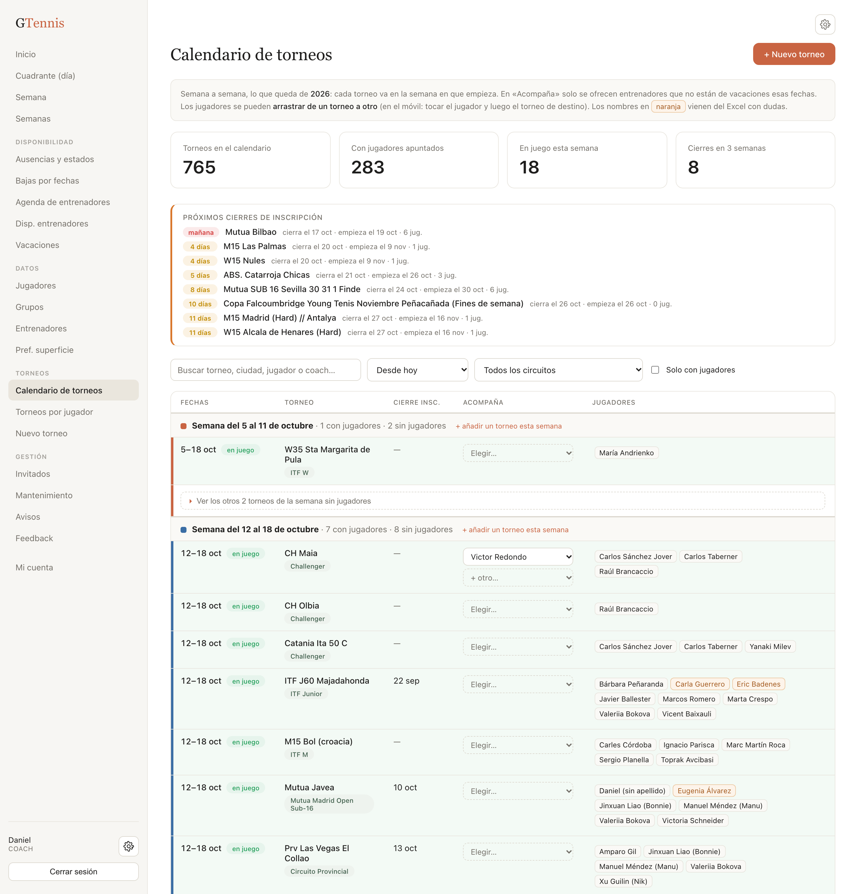
Qué hay en cada fila:
Arriba están el buscador (nombre, ciudad, circuito, jugador o coach), el filtro de mes, el de circuito y la casilla «Solo con jugadores», que quita también el desplegable de los torneos a los que no va nadie.
Con el filtro «Desde hoy», bajar semana a semana y hacerse cinco preguntas. Entre 5 y 10 minutos por semana.
| Pregunta | Qué hacer en la app |
|---|---|
| ¿Falta algún torneo al que va alguien de mi grupo? | Mira antes en el desplegable de la semana: puede estar ya en el calendario sin jugadores. Si está, apunta a los tuyos en su ficha o arrástralos. Si no, «+ añadir un torneo esta semana» (apartado 4). |
| ¿Hay dos filas que son el mismo torneo? | Abrir la ficha de la buena → «¿Está repetido?» → fusionar (apartado 5). |
| ¿Mis jugadores están en el torneo correcto? | Arrastrar al que está mal, quitar al que no va, apuntar al que falta, confirmar los naranjas (apartado 8). |
| ¿Quién acompaña? | Elegirlo en el desplegable de la fila (apartado 7). |
| ¿Este torneo se juega? | Si no, Editar → estado Cancelado. Los torneos sin nadie apuntado se dejan tal cual. |
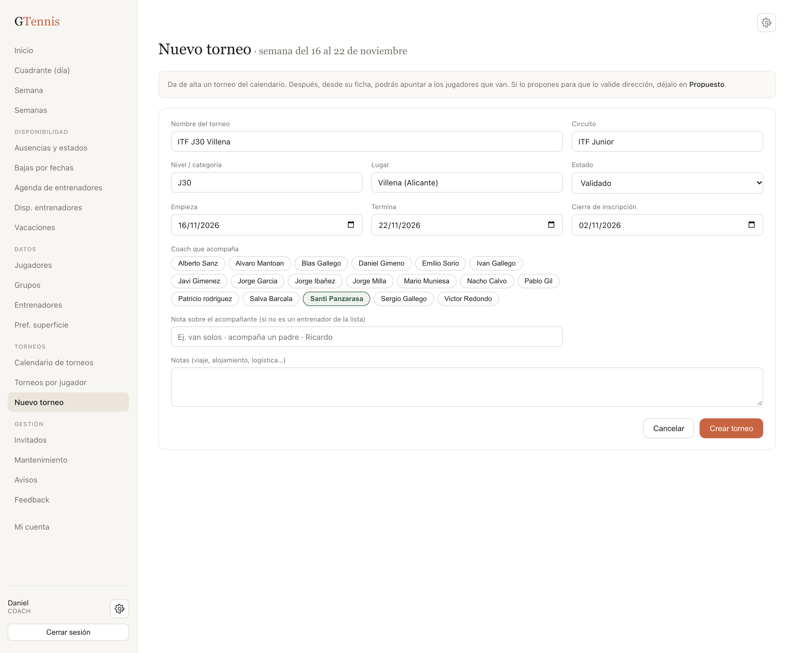
El Excel tenía el mismo torneo escrito de varias formas en distintas hojas. Cuando dos filas son el mismo torneo:
Los jugadores de la otra fila pasan a esta (sin repetir a nadie), los acompañantes se suman, el nombre antiguo queda guardado como «también escrito como», y si esta ficha no tenía cierre o lugar se cogen de la otra. La fila sobrante desaparece.
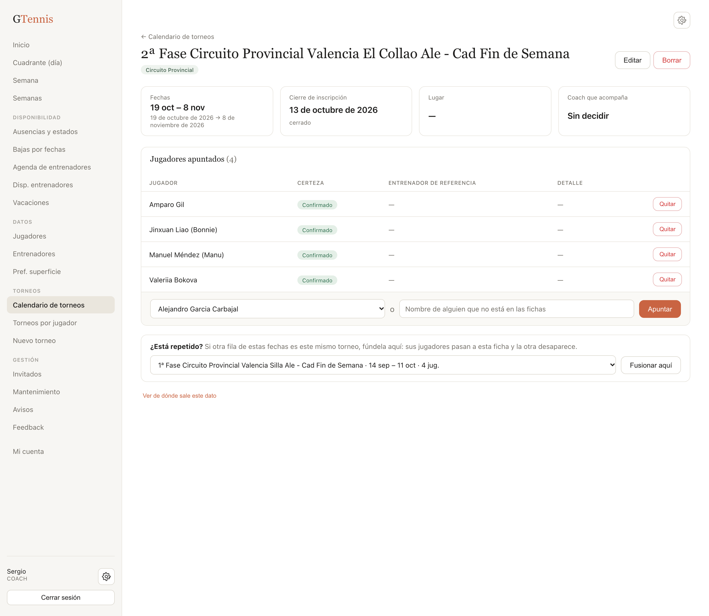
En la ficha, Editar abre el formulario con todos los campos. Guardar cambios aplica; Cancelar deja todo como estaba.
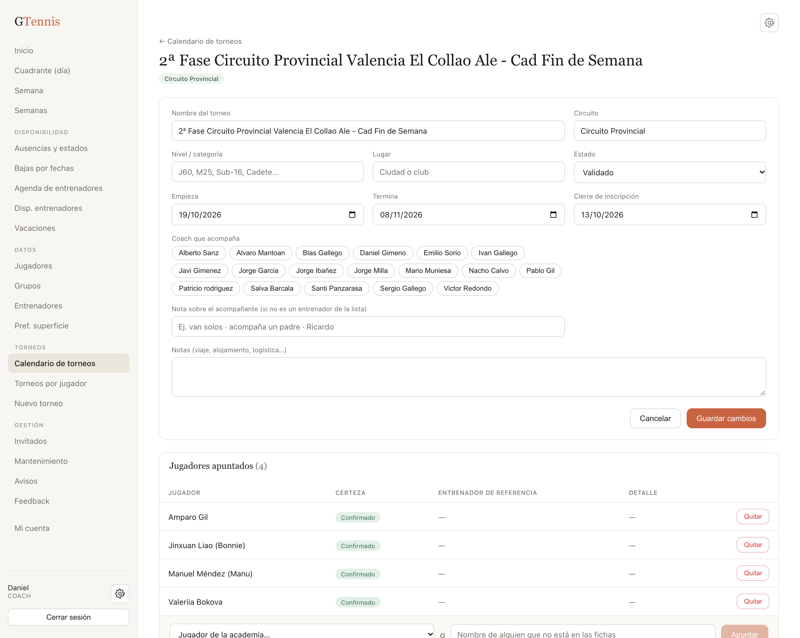
En la columna «Acompaña» del calendario hay un desplegable por cada entrenador asignado y otro para añadir. Se guarda al elegir, sin botón.
Cada head coach apunta, mueve y quita a los jugadores de su grupo de color. Si intentas tocar a uno de otro grupo, la app lo dice. Los nombres que no tienen ficha (están en gris con «sin ficha») los puede tocar cualquiera.
En la ficha del torneo, barra inferior: elegir al jugador en el desplegable (solo salen los que no están ya) y Apuntar. Si alguien no tiene ficha, escribir su nombre en la casilla de al lado. Nadie puede apuntarse dos veces al mismo torneo.
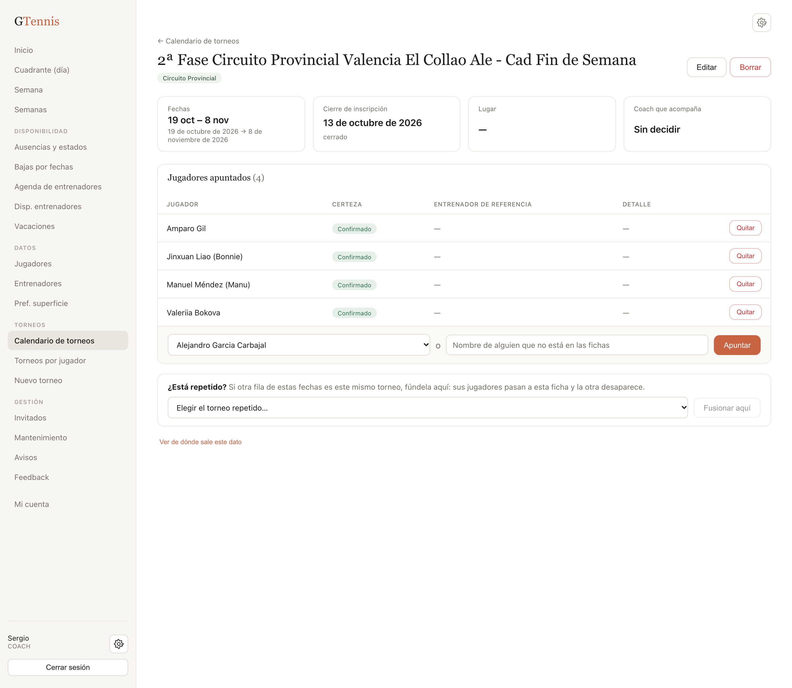
En el calendario, arrastrar la etiqueta del jugador y soltarla en la columna de jugadores del torneo de destino. También vale tocar al jugador (queda resaltado y aparece una barra «Moviendo a…») y luego tocar el torneo de destino. Los destinos posibles se marcan con línea de puntos. Para llevarlo a un torneo que aún no tiene a nadie, abre antes el desplegable de la semana. En cuanto ese torneo tiene un jugador, sube a la parte de arriba.
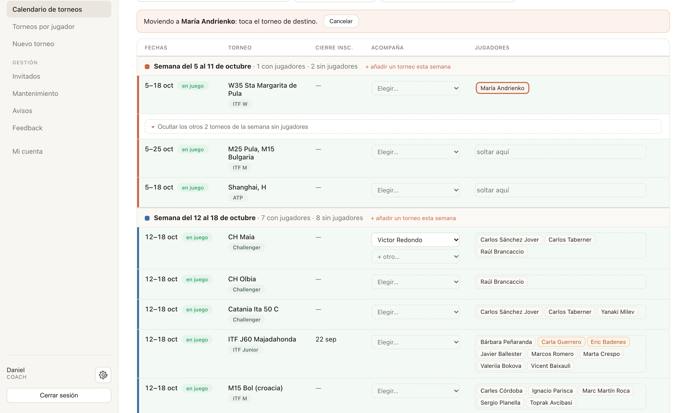
Qué jugadores son «tuyos» lo decide la pantalla Datos → Grupos. Allí cada head coach ve su bloque de color con las columnas de sus entrenadores y puede arrastrar a un alumno de una columna a otra (en el móvil: tocarlo y luego «Traer aquí»). Un alumno nuevo sin grupo también se coloca desde aquí. Mover columnas enteras entre bloques es cosa de dirección.
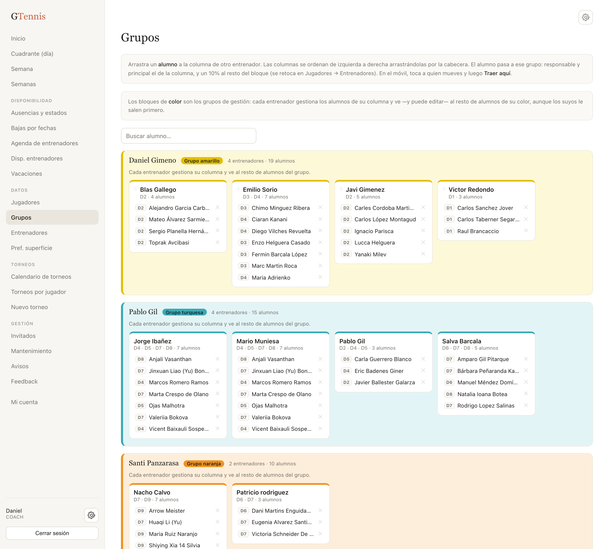
En Torneos → Torneos por jugador: una fila por jugador con cuántos torneos tiene, cuántos ya ha jugado, el siguiente y su próximo cierre de inscripción. Pulsando la fila se despliega toda la lista. Sirve para ver de un vistazo si a alguien le falta o le sobra competición, y para comprobar que lo que se ha movido en el calendario ha quedado bien.
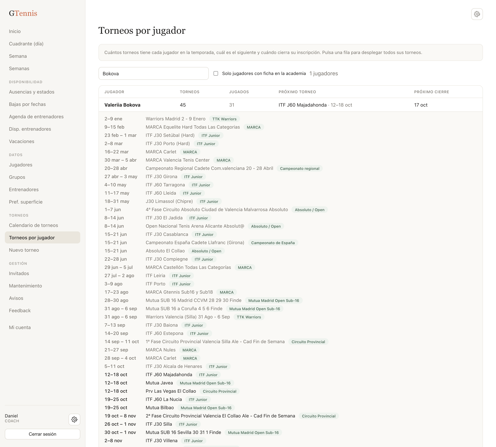
Todo lo anterior funciona en el móvil. Las filas se convierten en tarjetas. Para mover a un jugador, tocarlo y luego tocar la tarjeta del torneo de destino; el arrastre está pensado para ordenador.
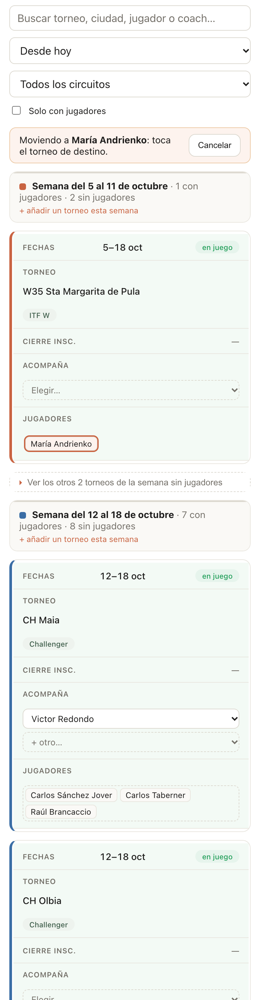
Lo que los head coaches no pueden hacer y condiciona el catálogo.
En Datos → Jugadores → + Nuevo. Nombre, escuela, fecha de nacimiento, división y entrenador responsable. Un jugador sin responsable no aparece en el grupo de ningún head coach y nadie podrá apuntarlo desde el desplegable.
Nombres que están en torneos y no tienen ficha hoy: Aarish, Andy Liu, Ashmita Mitra, Barry, Cristian Borriello, Daniela Martínez, Diego Inostroza, Elene Churruca, Emma Ghibardato, Félix Gil, Omar Ally, Sofía Fandos, Viraj, «Daniel» y «Elena» sin apellido, «David (¿Mas o Castillo?)» y cuatro columnas sin nombre de la hoja de Mario. Los que entrenan en el club deberían tener ficha; los demás pueden quedarse como nombre libre.
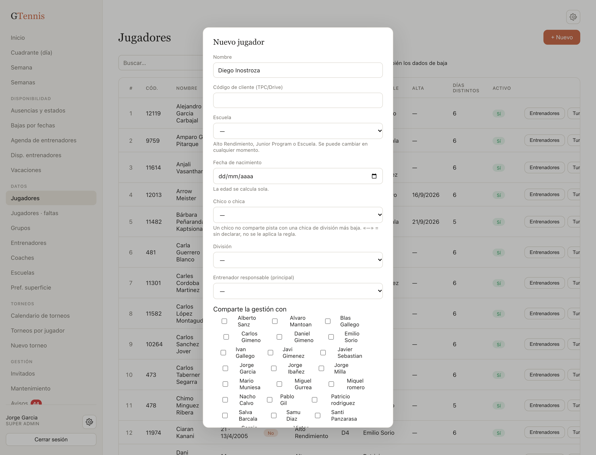
En Datos → Grupos dirección ve todos los bloques. Además de mover alumnos entre columnas, como los head coaches, puede arrastrar una columna entera (un entrenador con sus alumnos) a otro bloque. Esto es lo que decide qué head coach puede apuntar o mover a cada jugador en los torneos.
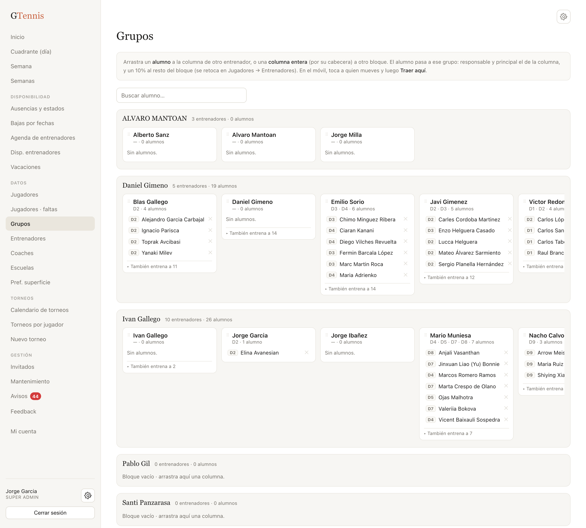
En Disponibilidad → Vacaciones. Cada periodo con su entrenador, fechas y motivo. El desplegable de «Acompaña» se fía de esto: un entrenador sin vacaciones registradas aparece siempre como disponible. Conviene meter también los viajes a torneos ya cerrados.
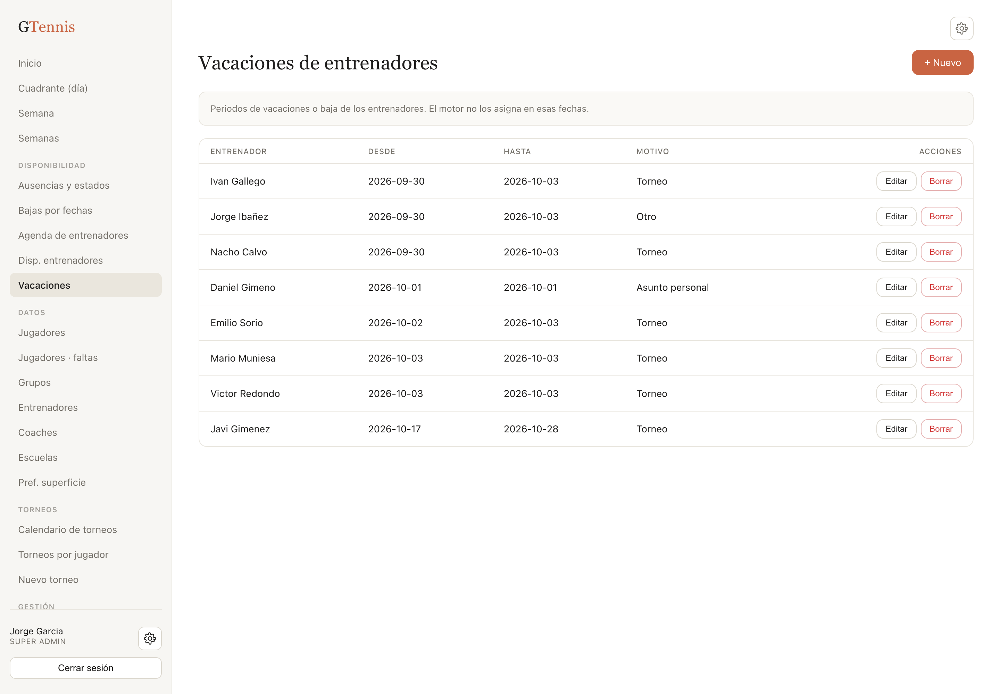
| Cuándo | Quién | Qué |
|---|---|---|
| Del 19 al 25 de octubre | Head coaches | Revisar sus semanas de aquí a fin de año con las cinco preguntas del apartado 3. |
| Del 26 de octubre al 1 de noviembre | Dirección | Fichas de los jugadores sin ficha, grupos, vacaciones, torneos sin acompañante, propuestos. |
| 2 de noviembre | Todos | Catálogo cerrado. Desde entonces, alta nueva = Propuesto y dirección valida. |
| Qué pasa | Por qué y qué hacer |
|---|---|
| «No es de tu grupo» al mover o quitar a un jugador | Lo gestiona otro head coach. Si debería ser tuyo, habla con él o con dirección para cambiarlo en Grupos. |
| Un entrenador no sale en «Acompaña» | Tiene vacaciones registradas en esas fechas. Si es un error, corregirlo en Vacaciones. |
| Un jugador no está en el desplegable para apuntarlo | Ya está apuntado a ese torneo, o no tiene ficha (dirección la crea), o está de baja. |
| El torneo dura varias semanas y solo lo veo en una | Está en la semana en que empieza. Con el filtro de mes aparece en todos los meses que toca. |
| Veo torneos profesionales (ATP, WTA, Challenger) que no son míos | Son del plan de los jugadores profesionales. Los que no tienen a nadie ya salen plegados; para el resto, usa el buscador. |
| He fusionado mal | No hay deshacer. Vuelve a dar de alta el torneo y mueve a los jugadores arrastrando. |
| Quiero saber de dónde salió un dato | Abajo de la ficha, «Ver de dónde sale este dato»: hoja y celda del Excel y otras formas en que estaba escrito. |